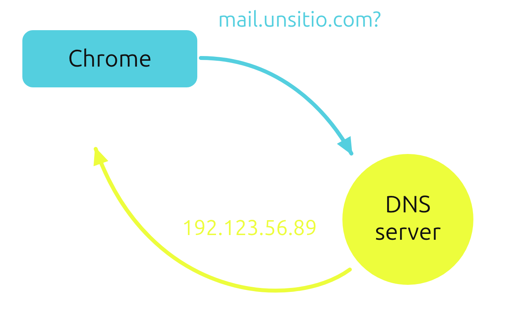
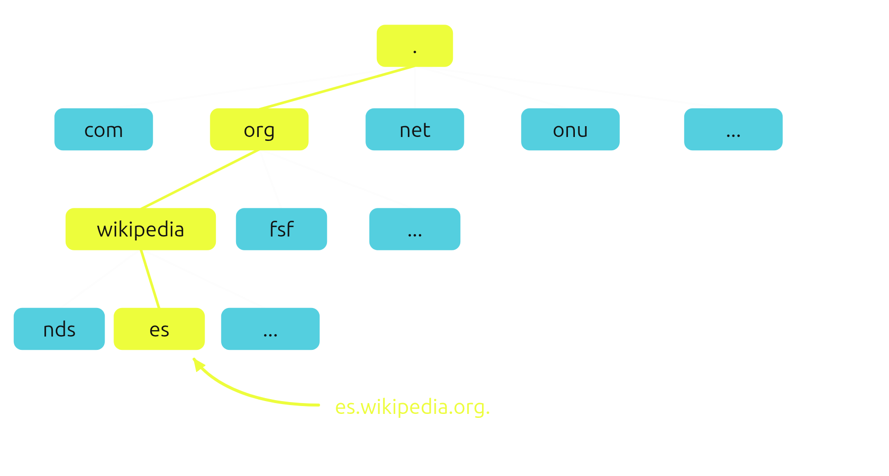

Arquitectura de la Web
Tópicos Avanzados de Programación
Qué vamos a ver?
- No vamos a aprender a hacer una web, eso es fácil con herramientas modernas.
- Vamos a enfocarnos en entender cómo funcionan las cosas.
En particular:
- HTTP por dentro (incluyendo HTTP 2.0, y HTTPS/SSL).
- Manejo de estado/sesiones (y sus temas de privacidad).
- DNS.
- Cómo funciona un framework web por dentro.

Qué pasa cuando entramos a una web?
- Navegador busca dónde está el server.
- Navegador abre conexión al server.
- Navegador pide algo (request).
- Servidor recibe pedido, procesa, prepara una respuesta.
- Servidor devuelve respuesta (response).
- Navegador muestra la respuesta al usuario.
1. Dónde está el server?
http://www.noticias.com/policiales/hoy
http://www.noticias.com/policiales/hoy
Servidor al que queremos hablarle: un dominio o una IP.
Protocolo con el que queremos comunicarnos: HTTP, HTTPS, FTP, etc.
Ruta de lo que queremos pedir: una "URI", que identifica lo que queremos pedir.
Para llegar al servidor necesitmos su IP.
Qué pasa si es un dominio?
DNS! Lo dejamos para dentro de un rato :)
Por ahora asumamos que conocemos su IP.
2. Abrir una conexión
Qué tipo de conexión abrimos?
A qué puerto?
Conexión TCP/IP.
Al puerto 80 para HTTP, 443 para HTTPS, o lo especificamos a mano.
Ej: http://www.noticias.com:9090/policiales/hoy
3. Pedir algo
Cómo le pedimos algo al servidor usando esa conexión?
Enviamos una petición (request) HTTP!

HTTP
Es un protocolo que permite a programas hablarse entre si, con pedidos y respuestas.
- Las peticiones y respuestas se mandan en texto plano.
- Cada petición recibe una sola respuesta.
- Cada petición es independiente de las anteriores.
- Luego de la respuesta, se cierra la conexión (HTTP 1.0).
Request HTTP
GET /policiales/hoy HTTP/1.1
User-Agent: Mozilla/4.0
Host: www.noticias.com
Accept: text/html
Accept-Language: en-us
1. Request line
Método: qué tipo de acción queremos hacer (GET, POST, ...).
URI: identificador sobre lo que queremos actuar.
Y el protocolo que queremos usar.
GET (para pedir datos) y POST (para enviar datos) son los verbos más comunes.
Los demás se usan internamente para cosas como caché, o los usamos para APIs REST.
Navegar a una url, click en links, etc son normalmente un GET.
Formularios que guarden datos usan normalmente POST.
El navegador se comporta diferente ante un refresh de un GET vs un POST.
2..N Headers (cabeceras)
Pares de "clave: valor" que dan información extra (metadatos) sobre la petición y lo que esperamos como resultado.
Libres, pero relativamente estandarizados.
Algunos headers conocidos
User-agent: qué navegador y sistema operativo somos.
Host: a qué dominio le queremos hablar (por si varios apuntan al mismo servidor).
Accept: qué formato esperamos en la respuesta.
Body (cuerpo)
Viene luego de una línea en blanco.
Vacío en este caso.
Si estamos enviando datos, los datos mismos van al final (ej: un archivo, datos de un formulario, etc).
Dos líneas en blanco marcan el final de la request.
4. Servidor procesa
Al servidor le llegó la petición. Y ahora qué?
Técnicamente, cualquier cosa!
Pero normalmente: leer o guardar datos de la base de datos, armar un HTML con la respuesta, etc.
Puede estar programado en cualquier cosa! Mientras sepa escuchar en un puerto y hablar HTTP, alcanza.
4. Servidor responde
Sin importar lo que haga, el servidor tiene que terminar devolviendo una Response HTTP.
Response HTTP
HTTP/1.1 200 OK
Date: Mon, 27 Jul 2009 12:28:53 GMT
Server: Noticias.com
Content-Length: 88
Content-Type: text/html
<html>Policiales:...</html>
1. Response line
Protocolo: el servidor nos informa en qué protocolo nos responde.
Código de estado: un número y texto que nos dicen qué tipo de resultado tuvo la petición.
Hay muchos códigos de respuesta posibles. Algunos ejemplos:
200: la petición fue exitosa.
301: lo pedido se movió a otra url.
401: te falta autenticarte.
403: te faltan permisos.
404: lo pedido no existe.
500: el servidor tuvo un error procesando la petición.
2..N Headers (cabeceras)
Pares de "clave: valor" que dan información extra (metadatos) sobre la respuesta.
Libres, pero relativamente estandarizados.
Algunos headers conocidos
Content-type: qué tipo de contenido nos devolvió el servidor (HTML, JSON, imagen, etc).
Content-length: cuántos bytes tiene el cuerpo de la respuesta.
Date: a qué hora fue generada la respuesta.
Body (cuerpo)
Viene luego de una línea en blanco.
Tiene el contenido de la respuesta propiamente dicho.
Puede ser cualquier cosa! Pero normalmente: HTML, JS, CSS, imágenes, etc.
El final de la respuesta viene dado por el Content-length (o por cierre de la conexión).
5. Navegador muestra contenido
Qué hace el navegador con la respuesta?
Normalmente, es un HTML o algún formato que el navegador entiende. Lo interpreta y muestra visualmente.
Peeeeero... en realidad es más complicado.
De qué está hecha una web normal? Solo un HTML?
Muchas requests y responses
<p>
Noticia: nueva mascota!
<img src="/foto1.png" />
<img src="/foto2.png" />
</p>
La respuesta típica es un HTML con referencias a muchas otras cosas: imágenes, CSS, JS, etc.
...cada una de ellas requiere una nueva request!
En un sitio moderno? Decenas o cientos!
Recordemos: qué hacía HTTP con la conexión luego de enviar la respuesta?
La cierra.
Cada request/response es una nueva conexión.
Esto es super costoso e ineficiente!

HTTP 2.0
Igual que HTTP, solo que permite reutilizar la conexión para múltiples request/responses.

Demo
Hablemos HTTP a mano.
Sin un navegador
El cliente es siempre un navegador? Qué puede ser en vez?
Hoy usamos HTTP no solo para navegar, sino para comunicar todo tipo de sistemas entre si:
APIs web!

APIs web
Programas que se hablan usando HTTP.
El cliente puede ser cualquier programa, no solo un navegador.
El contenido suele ser algún formato estándar (JSON, XML en el pasado, etc).
El problema de la falta de estado
Cómo sabe un sitio web qué mostrarme a mi en particular?
Por hacer esas requests desde una misma conexión?
❌ No. Incluso en HTTP 2.0, la conexión igual se cierra al terminar de cargar la página. El próximo click es una nueva conexión.
Por mi IP?
❌ Imposible. Cambia, y compartimos IP pública entre muchos aparatos en al misma red.
Cookies
Usando headers para mantener sesiones.

La primer request no tiene nada especial.
El servidor recibe esta request, y decide crear una nueva "sesión". La sesión tiene un id asociado.
En su response, el servidor incluye un header "Cookie", con el id de la sesión.
El navegador lee ese header (la cookie) de la response y guarda el valor en disco.
En cada nueva request que haga al mismo servidor, el navegador envía la cookie como un header.
El servidor entonces sabe que esas requests pertenecen a la misma sesión, porque todas traen el mismo id (en la cookie).
Sesión != estar logueado
Esto sucede incluso cuando no estamos logueados. Siempre tenemos una sesión de navegación.
Al loguearnos, el servidor guarda de su lado "sesión 42 = fisa".
Consumir preferentemente antes del...
Las cookies se pueden configurar para que expiren: el servidor le dice al navegador (por headers) cómo/cuándo expiran.
No podemos confiar en que el navegador haga caso: el servidor debe validar que no mande cookies expiradas.
"Desea aceptar las cookies...?"
Hasta ahora parece todo muy inofensivo. Por qué esas confirmaciones sobre cookies?
Ej: fisa visita "espadas-secretas.com", que tiene publicidad embebida provista por Google. Para obtener el pedacito de publicidad, el navegador:
Envía una request a Google pidiendo la publicidad...
...con la cookie de sesión de Google (es una request a servers de Google)...
...pero indicándole (por headers) que se hizo desde la página "espadas-secretas.com"!
Consecuencia: Google sabe que fisa visitó "espadas-secretas.com", sin que fisa haya decidido darle esa info 😡
Las cookies de terceros (contenido embebido) se pueden usar para violar la privacidad de los usuarios.
Por ley europea hace falta pedir permiso, pero los usuarios aceptan sin tener idea.
Algunos navegadores están empezando a bloquearlas directamente! 💪
Y ya que hablamos de privacidad...
HTTP es seguro?
Si la request y response son simplemente texto, quiénes pueden leer su contenido?
😱 Problema de privacidad: cualquier intermediario (el router de starbucks, mi proveedor de internet, etc) podría leer todo!
Cuando enviamos una request y recibimos una response, cómo sabemos si estamos hablando realmente con el servidor que queremos?
😱 Problema de autenticidad: cualquier intermediario también podría hacerse pasar por el servidor!
HTTP es inseguro. Solución: HTTPS
HTTPS
Matamos dos pájaros de un tiro usando encriptación asimétrica y firmas criptográficas.
Resolviendo la Privacidad (fácil):
- Las requests y responses se encriptan con encriptación asimétrica. Un intermediario ya no puede entender el contenido.
- Las claves (públicas y privadas) que se usan para el proceso son negociadas al inicio, son temporales, y nunca se mandan.
- (el algoritmo para lograr eso es muy interesante!)
Ok, pero cómo sabemos que estamos hablando con el servidor correcto?
Resolviendo la Autenticidad (no tan fácil...):
- Al hablar con un servidor, le pedimos que firme criptográficamente sus responses con un certificado propio del sitio.
- Validamos que las responses fueron realmente firmadas con ese certificado.
- Ahora estamos seguros que las responses vienen desde ese sitio!... no?
Y si el certificado que nos compartió es inventado?
Sabemos que las responses fueron firmadas con ese certificado... pero no sabemos si el certificado es el real de ese sitio!
Resolviendo la Autenticidad (no tan fácil x2...):
- Además validamos el certificado mismo: tiene que haber sido emitido por una entidad segura conocida (el certificado mismo está firmado!).
- Nuestra PC tiene los certificados públicos de las entidades conocidas, que permiten validar la emisión de los certificados de los sitios.
Dicho de otra forma:
- Nos aseguramos que las responses vinieron de alguien que tiene un certificado de "espadas.com" (chequeando la firma de las responses).
- Y validamos que el certificado de "espadas.com" fue emitido por una entidad en la que confiamos (chequeando la firma del certificado mismo).
O con una analogía:
Che, mandame todas tus cartas con un sello que solo vos tenés.
...pero además voy a la "sellería" a que me validen que ese es realmente tu sello y nadie tiene otro igual.
Y si alguien se roba las llaves de la "sellería"?
Qué pasa si la entidad certificadora conocida deja de ser segura?...
Actualizaciones de seguridad del sistema operativo! Entre otras cosas, actualizan los certificados de entidades confiables que tiene nuestra PC.
HTTPS, resumiendo
- Encriptación de requests y responses: intermediarios no nos pueden espiar (privacidad!).
- Validación de identidad del servidor: intermediarios no se pueden hacer pasar por el sitio (autenticidad!).
Pero no es gratis...
- Hay que comprar los certificados, que cuestan bastante... o usar la entidad Lets Encrypt, que es genial, segura y gratis!
- Hay que configurar el server con los certificados.
- Hay que renovar periódicamente los certificados (vencen).
- Y firmar, encriptar y desencriptar cuesta CPU!
Volvamos al tema de obtener la IP del servidor...
DNS
(Sistema de nombres de dominio)
El problema que resuelve DNS
- Las conexiones se hacen a direcciones de red (IPs).
- Pero el usuario no puede recordar direcciones de red, en vez, puede recordar "nombres" de sitios.
- Solución: necesitamos una "libreta de direcciones" que mapee nombres a direcciones de red.
Esa "libreta" se usaría así:
- Un programa requiere comunicarse con photos.google.com.ar.
- El programa resuelve el dominio: esto es, traduce photos.google.com.ar a una dirección de red usando la libreta.
- El programa inicia la comunicación con la computadora que se encuentre en la dirección de red obtenida.
Simple! Construyámoslo en un ratito.
(famosas últimas palabras)
Primer problema
Es imposible tener en nuestra pc la lista de direcciones de todos los dominios del mundo.
Cómo nos enteramos cuando Google cambia la dirección de un servidor?
Servidores DNS
En vez: resolver es enviar una consulta de DNS a un Servidor de Nombres (o Servidor DNS).

Pero... en qué dirección están los Servidores DNS?
Suelen venir de la configuración de red (nos lo puede indicar el router por ejemplo), y solemos poder pisarlas a nivel de OS o programas que lo permitan.
Ej: 8.8.4.4 es un DNS público que ofrece Google.
Si un programa hace 200 requests seguidas al mismo dominio, tiene sentido que haga 200 consultas de DNS?
❌Sería extremadamente ineficiente!
Ahorrando preguntas v1
Resolvedor de nombres del sistema operativo.
Los programas no consultan directamente al servidor DNS. En vez consultan al sistema operativo.
El OS tiene un servicio Resolvedor de DNS local.
Si no conoce la dirección, este servicio le habla al servidor externo.
✅ Y tiene caché! Recuerda las direcciones que le pidieron recientemente, evitando consultar al servidor cada vez.

Ahorrando preguntas v2
Servidores DNS intermediarios.
Normalmente no hablamos de forma directa con servidores DNS globales:
El proveedor de internet tienen sus propios servidores de DNS (con caché!). El super-proveedor que le da internet al proveedor, también! Y así sucesivamente.
Las consultas DNS van saltando de servidor en servidor hasta que alguno tenga la dirección en caché o lleguen al servidor "autoritativo" que conoce esa dirección.


Quién tiene la palabra final?
El servidor DNS autoritativo es el que tiene la palabra final sobre la dirección de un dominio.
Sabe la dirección con total seguridad porque el dueño del dominio configuró ahí la dirección de red a la que apuntar.
Los demás servidores pueden conocer la dirección por haberla preguntado, pero son solo intermediarios con caché.
Hablando de caché...
Problemas de caché
Qué problemas puede haber por tener todos estos intermediarios con caché?
Qué pasa si tienen cacheada una dirección, y esa dirección cambia en el servidor autoritativo?
❌Hasta que esas cachés no se venzan, van a resolver incorrectamente la dirección!
Es un problema. Solemos evitar cachear por mucho tiempo, y solemos evitar cambiar direcciones muy seguido.
Más complicaciones
Sería imposible tener un único servidor global autoritativo.
Pero entonces para un dominio puntual... a cuál autoritativo le preguntamos?
Existe una jerarquía de servidores de dominios.
Hay servidores top level: uno para cada terminación posible: ".com", ".org", ".net", ".ar", ".us", etc.
Servidores ROOT nos saben redirigir al top level que corresponda.
Algunos top levels son administrados por países: ".ar" es administrado el gobierno de Argentina (NIC.AR).
Por ejemplo, para resolver elecciones.ar:
- Le preguntamos a un ROOT. ROOT nos dice "preguntale a AR, que está en x.x.x.x".
- Le preguntamos a AR. AR nos responde "elecciones.ar está en y.y.y.y"

Más niveles!
Un pasamanos infinito.
El servidor de NIC.AR seguro no conoce dónde están todos los ".ar": probablemente tiene un servidor que sabe de ".com.ar" y otro diferente para ".gob.ar".
En ese caso si le preguntamos por elecciones.gob.ar, pasaría lo siguiente:
- Le preguntamos a ROOT. ROOT nos dice "preguntale a AR, que está en x.x.x.x".
- Le preguntamos a AR. AR nos responde "preguntale a GOB.AR, que está en y.y.y.y".
- Le preguntamos a GOB.AR. Este finalmente nos responde con la dirección de elecciones.gob.ar.
Y máááás niveles!
I'm tired boss...
Incluso es posible que personas y empresas tengan sus propios servidores de DNS, para responder a subdominios propios!
Por ejemplo, Google tiene su propio DNS para responder a todas las consultas del estilo "ALGO.google.com.ar"
Si queremos resolver mail.google.com.ar...
- Le preguntamos a ROOT. ROOT nos dice "preguntale a AR, que está en x.x.x.x".
- Le preguntamos a AR, nos responde "preguntale a COM.AR, que está en y.y.y.y".
- Le preguntamos a COM.AR, nos responde con "preguntale a GOOGLE.COM.AR, que está en z.z.z.z".
- Le preguntamos a GOOGLE.COM.AR, y este finalmente nos sabe responder dónde está mail.google.com.ar.

Cada nodo es autoritativo de *.su-dominio
Y a todo esto, no se olvidaron de los intermediarios con caché, no?

Mini Demo
dig +trace mail.google.com.ar
DNS es seguro?
Mas o menos...
DNS y privacidad (1)
❌ Resolvers y servidores DNS intermedios pueden saber qué dominios estamos intentando resolver.
✅ Solución: si no confiamos en alguno (ej: proveedor de internet) podemos configurar la computadora para ir directamente a un DNS más confiable (OpenDNS, Google, etc).
DNS y privacidad (2)
❌ El servidor de DNS que elijamos igualmente va a saber a qué dominios estamos accediendo.
🤷♂️ No hay una solución para esto, pero eligiendo un ROOT confiable podemos mitigar un poco el problema.
DNS y privacidad (3)
😱 Las consultas de DNS viajan encriptadas? Si no lo hacen, todo intermediario en la red va a poder ver qué dominios estamos intentando resolver, sin importar que DNS usemos!
✅ Solución: los navegadores actuales ya hacen "DNS over HTTPS", que encripta la conexión.
...pero solo si el DNS que usemos lo soporta! Ej: Fibertel no.
✅ Solución: configurar un DNS que soporte DNS over HTTPS (Google, OpenDNS).